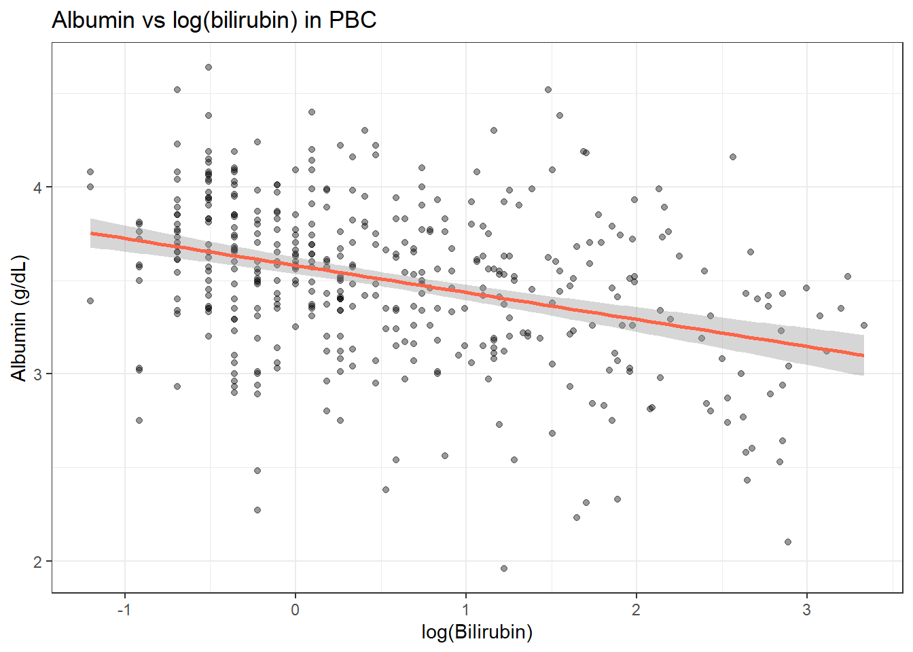
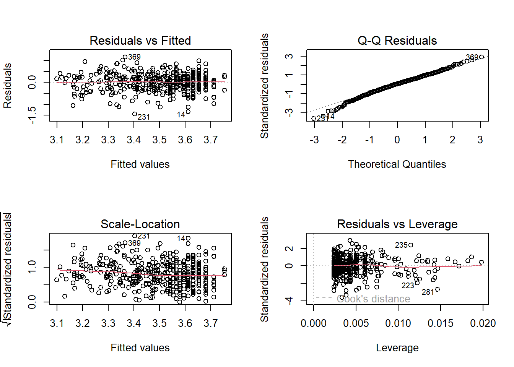
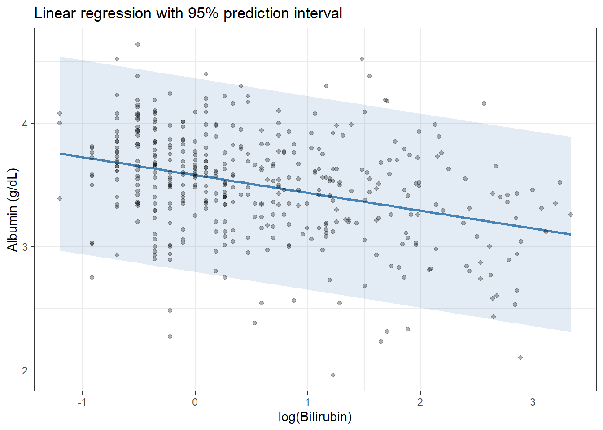
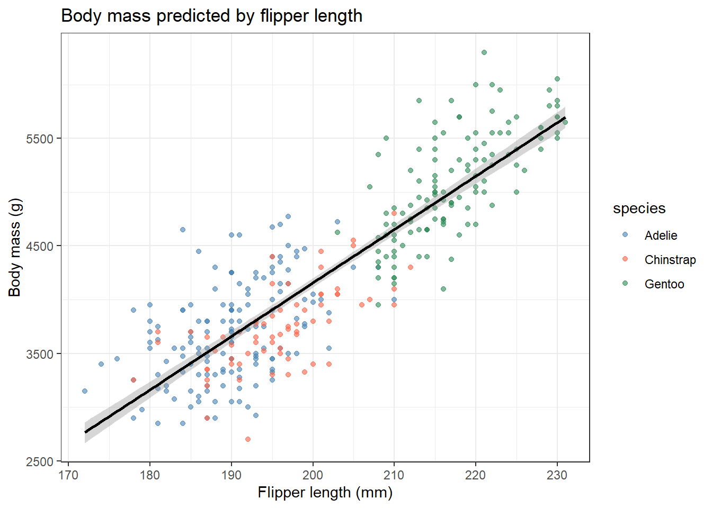
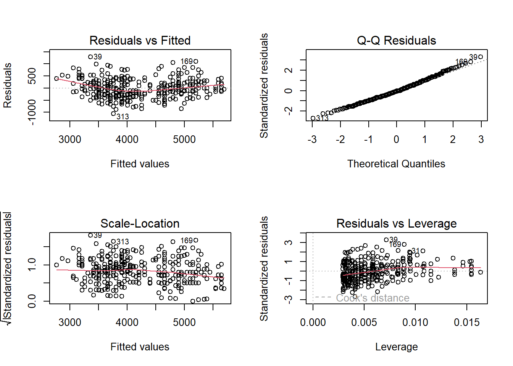
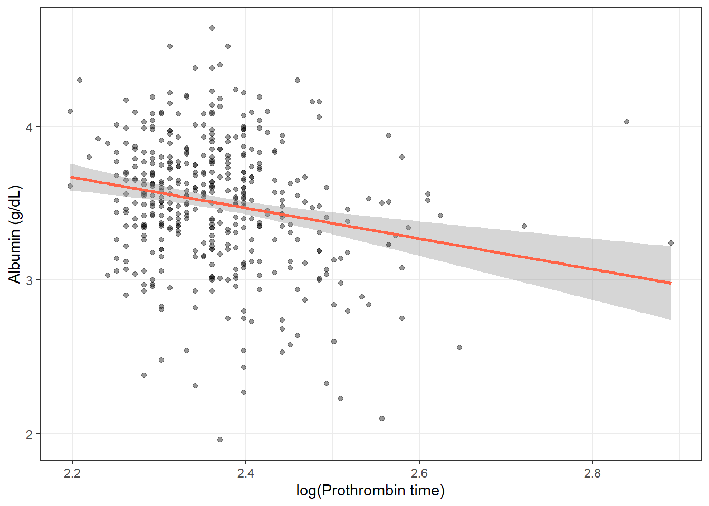
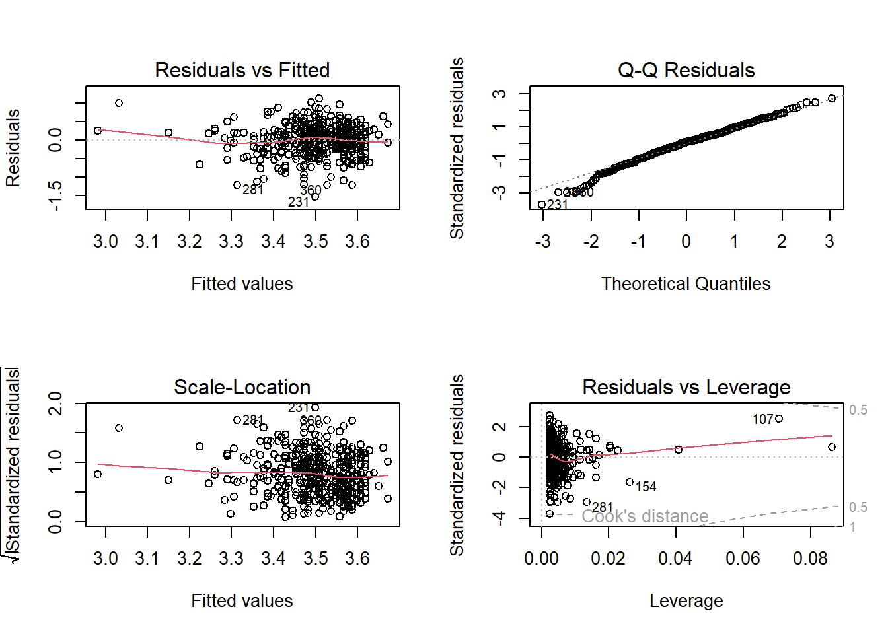
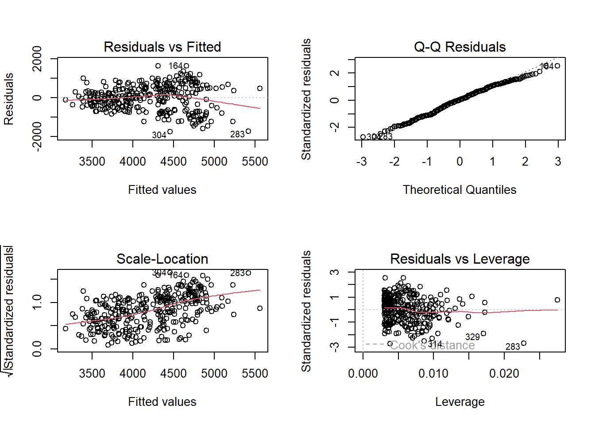

pbc <- survival::pbc %>%
as_tibble() %>%
janitor::clean_names() %>%
filter(!is.na(albumin), !is.na(bili)) %>%
mutate(log_bili = log(bili))17 Simple Linear Regression
17.1 When Do You Use This?
You have a continuous outcome and a continuous predictor, and you want to quantify how much the outcome changes per unit increase in the predictor � and test whether that relationship is statistically meaningful. Simple linear regression gives you a straight-line model with an estimated slope and its confidence interval. For example: predicting serum albumin from bilirubin, or estimating how bill length changes with flipper length in penguins.
17.2 Learning Objectives
After completing this session you will be able to:
- Fit a simple linear regression model with
lm()in R - Interpret the intercept, slope, standard error, and \(R^2\)
- Check the four key regression assumptions using diagnostic plots
- Extract and present results with
broom::tidy()andbroom::glance() - Predict new values with
predict()and plot the regression line with uncertainty
17.3 Background: The Linear Model
A simple linear regression models the relationship between a continuous outcome \(Y\) and a single predictor \(X\):
\[Y_i = \beta_0 + \beta_1 X_i + \varepsilon_i \quad \varepsilon_i \sim N(0, \sigma^2)\]
- \(\beta_0\): intercept ? the expected value of \(Y\) when \(X = 0\)
- \(\beta_1\): slope ? the expected change in \(Y\) for a one-unit increase in \(X\)
- \(\varepsilon_i\): residual ? what the model does not explain
The model is fitted by minimising the sum of squared residuals (ordinary least squares, OLS).
Assumptions (LINE):
| Assumption | How to check |
|---|---|
| Linearity | Residuals vs fitted plot ? no pattern |
| Independence | Study design ? cannot check from data alone |
| Normality of residuals | QQ-plot of residuals |
| Equal variance (homoscedasticity) | Scale-location plot ? flat red line |
17.4 Example 1: Clinical Data (PBC)
17.4.1 Predict Albumin from Log(Bilirubin)
Bilirubin is right-skewed; we log-transform it to achieve a more linear relationship.
Always plot first:
pbc %>%
ggplot(aes(x = log_bili, y = albumin)) +
geom_point(alpha = 0.4, size = 1.5) +
geom_smooth(method = "lm", color = "tomato", se = TRUE) +
labs(title = "Albumin vs log(bilirubin) in PBC",
x = "log(Bilirubin)", y = "Albumin (g/dL)") +
theme_bw()`geom_smooth()` using formula = 'y ~ x'
fit <- lm(albumin ~ log_bili, data = pbc)
summary(fit)
Call:
lm(formula = albumin ~ log_bili, data = pbc)
Residuals:
Min 1Q Median 3Q Max
-1.44320 -0.23335 0.02731 0.24894 1.15405
Coefficients:
Estimate Std. Error t value Pr(>|t|)
(Intercept) 3.58001 0.02235 160.180 < 2e-16 ***
log_bili -0.14447 0.01908 -7.572 2.39e-13 ***
---
Signif. codes: 0 '***' 0.001 '**' 0.01 '*' 0.05 '.' 0.1 ' ' 1
Residual standard error: 0.3989 on 416 degrees of freedom
Multiple R-squared: 0.1211, Adjusted R-squared: 0.119
F-statistic: 57.34 on 1 and 416 DF, p-value: 2.391e-13
Reading the
summary() Output � Line by Line
When you run summary(fit), R prints several blocks. Here is what each one means.
Call: Just echoes back the formula you used � albumin ~ log_bili. Confirms R fitted the right model.
Residuals:
Min 1Q Median 3Q Max
-1.52 -0.29 0.01 0.31 1.18These are the differences between each patient’s observed albumin and the model’s prediction. Ideally: - The Median should be close to 0 (no systematic over- or under-prediction) - The Min and Max should be roughly symmetric � if the biggest error is +1.18 and smallest is -1.52, that is reasonably balanced. - Very large Max or very negative Min suggests outliers.
Coefficients: table
Estimate Std. Error t value Pr(>|t|)
(Intercept) 4.15 0.06 69.2 <2e-16 ***
log_bili -0.34 0.03 -11.3 <2e-16 ***| Column | What it means |
|---|---|
| Estimate | The fitted value of the coefficient � the slope or intercept |
| Std. Error | How uncertain the estimate is � smaller is more precise |
| t value | Estimate � Std. Error � how many standard errors away from zero |
| Pr(>|t|) | p-value � probability of seeing a t-value this large if the true slope were zero |
| Stars (***) | Just a shorthand: *** = p < 0.001, ** = p < 0.01, * = p < 0.05, . = p < 0.1 |
Residual standard error: 0.43 on 416 degrees of freedom This is the typical size of a prediction error. On average, the model’s albumin prediction is off by about 0.43 g/dL. Degrees of freedom = number of observations - number of parameters estimated (here, 418 - 2 = 416).
Multiple R-squared: 0.22 Log(bilirubin) explains 22% of the variability in albumin across patients. The remaining 78% is explained by other factors not in this model.
Adjusted R-squared: 0.22 Almost the same as R� here because we only have one predictor. It would drop relative to R� if we had many predictors but most were uninformative. Prefer adjusted R� when comparing models with different numbers of predictors.
F-statistic: 128 on 1 and 416 DF, p-value: < 2.2e-16 Tests whether the whole model explains significantly more variance than just predicting the mean for everyone. With one predictor, this is equivalent to the t-test on the slope. If p < 0.05, at least one predictor is useful.
17.4.2 Interpreting the Output
# Coefficients table
tidy(fit, conf.int = TRUE)# A tibble: 2 × 7
term estimate std.error statistic p.value conf.low conf.high
<chr> <dbl> <dbl> <dbl> <dbl> <dbl> <dbl>
1 (Intercept) 3.58 0.0223 160. 0 3.54 3.62
2 log_bili -0.144 0.0191 -7.57 2.39e-13 -0.182 -0.107# Model-level statistics
glance(fit)# A tibble: 1 × 12
r.squared adj.r.squared sigma statistic p.value df logLik AIC BIC
<dbl> <dbl> <dbl> <dbl> <dbl> <dbl> <dbl> <dbl> <dbl>
1 0.121 0.119 0.399 57.3 2.39e-13 1 -208. 422. 434.
# ℹ 3 more variables: deviance <dbl>, df.residual <int>, nobs <int>Reading the coefficients: - Intercept (4.15): Expected albumin when log(bilirubin) = 0 (i.e., bilirubin = 1 mg/dL) is 4.15 g/dL. - Slope (-0.34): For each one-unit increase in log(bilirubin), albumin decreases by 0.34 g/dL on average. - \(R^2\) (0.22): Log(bilirubin) explains 22% of the variability in albumin.
What Does This Actually Tell Us?
Translate the numbers into a scientific sentence before you report anything:
“In PBC patients, higher bilirubin is associated with lower albumin. For every approximate 2.7-fold increase in bilirubin (one unit on the log scale), albumin is on average 0.34 g/dL lower (95% CI: -0.40 to -0.28, p < 0.001). Log(bilirubin) explains 22% of the variability in albumin across patients.”
That is what you would write in a Results section. Notice:
- You state the direction (lower albumin)
- You give the magnitude (0.34 g/dL)
- You give the uncertainty (95% CI)
- You give the p-value � but note it only tells you the effect is unlikely to be zero, not that it is large or clinically important
- You give R� to indicate how much of the outcome this one predictor explains
Is 22% a good R�? In clinical and biological data, a single biomarker rarely explains more than 20�30% of an outcome � there are too many other factors involved. R� = 0.22 is actually quite respectable here. R� of 0.90+ is typical only in physics or engineering, not in medicine.
17.4.3 Checking Assumptions
par(mfrow = c(2, 2))
plot(fit)
par(mfrow = c(1, 1))Residuals vs Fitted: Should show no pattern. A curve suggests non-linearity.
QQ-plot: Residuals should follow the diagonal line. Heavy tails indicate non-normality.
Scale-Location: Should be flat. An upward slope indicates heteroscedasticity (variance increases with fitted values).
Cook’s Distance: Identifies influential observations. Points labeled by row number warrant investigation.
How to Read Diagnostic Plots � What Good and Bad Look Like
Plot 1 � Residuals vs Fitted You are looking for a flat, horizontal cloud of points with no pattern. - ? Good: Points scattered randomly around the horizontal line at zero. - ? Bad (U-shape or arc): The relationship is non-linear � your straight line is the wrong shape. Try log-transforming X. - ? Bad (funnel shape): Variance increases with fitted values (heteroscedasticity). Try log-transforming Y.
Plot 2 � Normal Q-Q You are checking whether the residuals follow a normal distribution. - ? Good: Points follow the diagonal line closely. - ? Bad (S-curve): Residuals are skewed. - ? Bad (heavy tails): More extreme values than expected � the model underestimates rare large errors. Mild deviation is usually acceptable for large samples.
Plot 3 � Scale-Location Same as Plot 1 but using the square root of the absolute residuals, making it easier to spot unequal variance. - ? Good: Red line is flat, points evenly spread. - ? Bad (upward slope): Variance increases � patients with high predicted albumin also have more unpredictable albumin.
Plot 4 � Cook’s Distance / Residuals vs Leverage Identifies observations that have a disproportionate effect on the fitted line. - Leverage = how unusual the X value is (extreme bilirubin, for example) - Cook’s D = combined measure: unusual X and large residual - Rule of thumb: Cook’s D > 4/n (here, 4/418 � 0.01) or > 1 flags cases to investigate - These are not automatically errors � they may be biologically interesting patients
17.4.4 Predictions
# Predict albumin for bilirubin = 2, 5, 10 mg/dL
new_data <- tibble(log_bili = log(c(2, 5, 10)))
predict(fit, newdata = new_data, interval = "confidence") fit lwr upr
1 3.479864 3.441244 3.518485
2 3.347484 3.292840 3.402128
3 3.247342 3.171939 3.322745# Plot with prediction band
pred_df <- tibble(
log_bili = seq(min(pbc$log_bili), max(pbc$log_bili), length.out = 100)
)
pred_df <- bind_cols(pred_df, as_tibble(predict(fit, newdata = pred_df, interval = "prediction")))
pbc %>%
ggplot(aes(x = log_bili, y = albumin)) +
geom_ribbon(data = pred_df, aes(y = fit, ymin = lwr, ymax = upr),
alpha = 0.15, fill = "steelblue") +
geom_line(data = pred_df, aes(y = fit), color = "steelblue", linewidth = 1) +
geom_point(alpha = 0.3, size = 1.5) +
labs(title = "Linear regression with 95% prediction interval",
x = "log(Bilirubin)", y = "Albumin (g/dL)") +
theme_bw()
17.5 Example 2: Animal Data (palmerpenguins)
We predict body mass from flipper length ? a practical calibration question in ecology and animal research.
library(palmerpenguins)Warning: package 'palmerpenguins' was built under R version 4.3.3peng <- penguins %>%
drop_na(body_mass_g, flipper_length_mm)
fit_p <- lm(body_mass_g ~ flipper_length_mm, data = peng)
tidy(fit_p, conf.int = TRUE)# A tibble: 2 × 7
term estimate std.error statistic p.value conf.low conf.high
<chr> <dbl> <dbl> <dbl> <dbl> <dbl> <dbl>
1 (Intercept) -5781. 306. -18.9 5.59e- 55 -6382. -5179.
2 flipper_length_mm 49.7 1.52 32.7 4.37e-107 46.7 52.7glance(fit_p)# A tibble: 1 × 12
r.squared adj.r.squared sigma statistic p.value df logLik AIC BIC
<dbl> <dbl> <dbl> <dbl> <dbl> <dbl> <dbl> <dbl> <dbl>
1 0.759 0.758 394. 1071. 4.37e-107 1 -2528. 5063. 5074.
# ℹ 3 more variables: deviance <dbl>, df.residual <int>, nobs <int>peng %>%
ggplot(aes(x = flipper_length_mm, y = body_mass_g)) +
geom_point(aes(color = species), alpha = 0.6) +
geom_smooth(method = "lm", color = "black", se = TRUE) +
scale_color_manual(values = c("steelblue", "tomato", "seagreen")) +
labs(title = "Body mass predicted by flipper length",
x = "Flipper length (mm)", y = "Body mass (g)") +
theme_bw()`geom_smooth()` using formula = 'y ~ x'
par(mfrow = c(2, 2))
plot(fit_p)
par(mfrow = c(1, 1))Notice that the residuals may cluster by species ? a sign that species confounds the relationship. This motivates multiple regression (see next session).
17.6 Where to Find Data Like This
PBC dataset: survival::pbc ? multiple continuous variables with clinically interpretable relationships.
palmerpenguins: palmerpenguins::penguins ? clean morphological measurements, ideal for regression with a natural grouping structure.
MASS::Boston: Housing data commonly used to teach regression; however, contains a problematic racial variable ? examine the data carefully before use.
17.7 What Can Go Wrong
Extrapolation A regression line is only valid within the range of the observed data. Predicting outside this range (extrapolation) can produce nonsensical values ? e.g., negative albumin.
Ignoring non-linearity If the Residuals vs Fitted plot shows a U-shape or arc, the linear model is misspecified. Try a log-transformation of X, or consider polynomial or spline terms.
Heteroscedasticity If variance increases with fitted values (fan-shaped residuals), OLS standard errors are incorrect. Consider transforming Y, or use heteroscedasticity-consistent (robust) standard errors.
Confounding A simple regression coefficient is not causal. A third variable may drive both X and Y (see Multiple Regression and Correlation and Association).
Outliers and influential points Check Cook’s distance. Points with Cook’s D > 1 (or > 4/n) exert disproportionate influence on the fitted line. Investigate them ? they may be data errors or genuinely unusual cases. ::: {.callout-warning} ### Common Misinterpretations � Don’t Make These Mistakes
“p < 0.05 means the effect is large” No. p < 0.05 means the effect is unlikely to be exactly zero given your sample size. A slope of -0.001 can be highly significant with 10,000 patients. Always report the magnitude (the estimate and CI), not just the p-value.
“p = 0.06 means there is no effect” No. It means you do not have enough evidence to rule out chance with this sample size. A study with 20 patients and p = 0.06 may simply be underpowered. Never say “no association” based on p > 0.05 alone.
“R� = 0.05 means the model is useless” Not necessarily. In medicine and biology, outcomes are driven by hundreds of factors. A single biomarker explaining 5% of variance may still be scientifically meaningful. Judge R� relative to what is realistic in your field.
“The intercept is always meaningful” Only if X = 0 is a realistic value. In lm(albumin ~ log_bili), the intercept is albumin when bilirubin = 1 mg/dL. If few patients have bilirubin near 1 mg/dL, the intercept is a mathematical anchor, not a clinically interpretable number.
“A significant p-value means my model assumptions are met” The p-value tells you nothing about model assumptions. Check the diagnostic plots regardless of the p-value. :::
17.8 Exercises
17.8.1 Exercise 1 (Guided): Prothrombin Time Predicts Albumin
- Plot albumin (y) vs prothrombin time (x) in
pbc. Log-transform prothrombin time. - Fit
lm(albumin ~ log(protime), data = pbc). Interpret the slope. - Check all four diagnostic plots.
- Report the slope, 95% CI, and \(R^2\).
Exercise 1: Solution
pbc2 <- pbc %>% filter(!is.na(protime))
# 1. Plot
pbc2 %>%
ggplot(aes(x = log(protime), y = albumin)) +
geom_point(alpha = 0.4) + geom_smooth(method = "lm", color = "tomato") +
labs(x = "log(Prothrombin time)", y = "Albumin (g/dL)") + theme_bw()`geom_smooth()` using formula = 'y ~ x'
# 2. Fit and interpret
fit2 <- lm(albumin ~ I(log(protime)), data = pbc2)
tidy(fit2, conf.int = TRUE)# A tibble: 2 × 7
term estimate std.error statistic p.value conf.low conf.high
<chr> <dbl> <dbl> <dbl> <dbl> <dbl> <dbl>
1 (Intercept) 5.86 0.546 10.7 7.52e-24 4.79 6.94
2 I(log(protime)) -0.997 0.231 -4.32 1.93e- 5 -1.45 -0.543glance(fit2)# A tibble: 1 × 12
r.squared adj.r.squared sigma statistic p.value df logLik AIC BIC
<dbl> <dbl> <dbl> <dbl> <dbl> <dbl> <dbl> <dbl> <dbl>
1 0.0432 0.0409 0.415 18.7 0.0000193 1 -223. 452. 464.
# ℹ 3 more variables: deviance <dbl>, df.residual <int>, nobs <int># 3. Diagnostics
par(mfrow = c(2, 2)); plot(fit2); par(mfrow = c(1, 1))
17.8.2 Exercise 2 (Semi-guided): Bill Length Predicts Body Mass (Penguins)
- Fit
lm(body_mass_g ~ bill_length_mm, data = penguins). - Does the model meet the assumptions? Check the diagnostic plots.
- Now fit the model separately for each species. Compare the slopes. How do they differ from the overall model?
Exercise 2: Solution
peng2 <- penguins %>% drop_na()
# 1. Overall model
fit_all <- lm(body_mass_g ~ bill_length_mm, data = peng2)
tidy(fit_all, conf.int = TRUE)# A tibble: 2 × 7
term estimate std.error statistic p.value conf.low conf.high
<chr> <dbl> <dbl> <dbl> <dbl> <dbl> <dbl>
1 (Intercept) 389. 290. 1.34 1.81e- 1 -181. 959.
2 bill_length_mm 86.8 6.54 13.3 1.54e-32 73.9 99.7# 2. Diagnostics
par(mfrow = c(2, 2)); plot(fit_all); par(mfrow = c(1, 1))
# 3. By species
peng2 %>%
group_by(species) %>%
do(tidy(lm(body_mass_g ~ bill_length_mm, data = .), conf.int = TRUE)) %>%
filter(term == "bill_length_mm") %>%
select(species, estimate, conf.low, conf.high, p.value)# A tibble: 3 × 5
# Groups: species [3]
species estimate conf.low conf.high p.value
<fct> <dbl> <dbl> <dbl> <dbl>
1 Adelie 93.7 69.9 118. 1.24e-12
2 Chinstrap 59.1 34.8 83.4 7.48e- 6
3 Gentoo 108. 85.6 130. 1.26e-1617.8.3 Exercise 3 (Open-ended)
In your own research, identify a continuous outcome and a single continuous predictor you expect to be linearly related. Fit a simple linear regression, check all assumptions, and write a Results paragraph including: the slope (95% CI), the \(R^2\), and a sentence on whether the assumptions are satisfied.
17.9 Comprehension Check
- You fit
lm(albumin ~ log_bili)and get slope = -0.34, SE = 0.03. Interpret the slope in plain language. - The QQ-plot of residuals shows a heavy right tail. Is this a problem? What would you do?
- \(R^2 = 0.05\). Does this mean the model is useless?
- You predict albumin = 2.1 g/dL for a patient with bilirubin = 80 mg/dL. The maximum observed bilirubin in your data is 28 mg/dL. Should you trust this prediction?
- What does the intercept represent in
lm(albumin ~ log_bili)when many patients have bilirubin values far from 1 mg/dL?
Answers
- For every one-unit increase in log(bilirubin) ? roughly a 2.7-fold increase in bilirubin on the original scale ? albumin is expected to be 0.34 g/dL lower, on average, after accounting for the uncertainty in this estimate.
- A heavy right tail in the QQ-plot indicates that large positive residuals occur more often than expected under normality. For inference (t-tests, CIs), mild non-normality is acceptable with large samples (CLT). For severe non-normality, try a log-transformation of the outcome or use robust standard errors.
- \(R^2 = 0.05\) means the predictor explains 5% of the outcome’s variability. Whether this is “useful” depends on context. In complex biological systems, a single biomarker explaining even 5% of variance may be scientifically meaningful. The slope and CI are more informative than \(R^2\) alone.
- No. A bilirubin of 80 mg/dL is well outside the range of the data used to fit the model (max = 28). Extrapolation is unreliable ? the linear relationship may not hold at extreme values.
- The intercept is the predicted albumin when log(bilirubin) = 0, i.e., when bilirubin = 1 mg/dL. If few patients have bilirubin near 1 mg/dL, the intercept is an extrapolation with high uncertainty and limited clinical meaning. It is mainly a mathematical artefact of the model parameterisation.
17.10 Further Reading
- Dalgaard (2008) — Chapter on linear models in Introductory Statistics with R
- Bland (2015) — Regression chapters in An Introduction to Medical Statistics
?lm,?predict.lmin R ? full documentationbroompackage vignette for tidy model output
Bland, Martin. 2015. An Introduction to Medical Statistics. 4th ed. Oxford University Press.
Dalgaard, Peter. 2008. Introductory Statistics with r. 2nd ed. Springer.